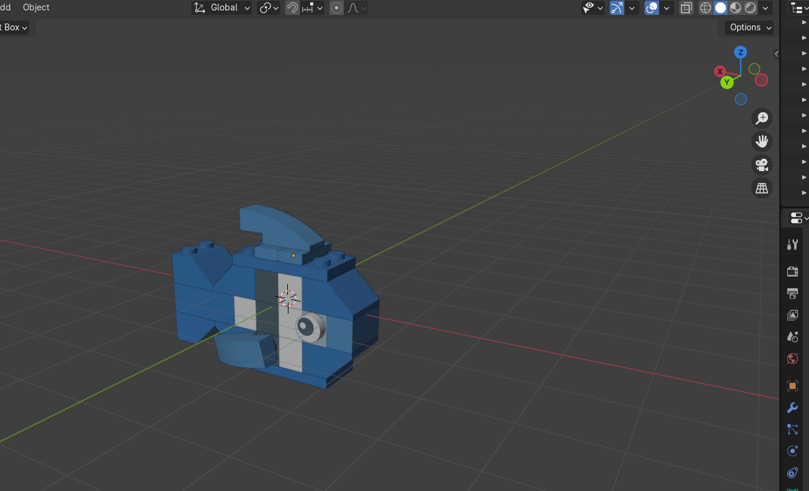

Greetings! This is a portfolio website which I made for fun.
This portfolio's function is to display artworks that I made in a neat and organized manner.
Why?
Displaying my artworks will in practice give users inspiration in their own works. This website will also benefit me as I go back and reflect on the artworks I made, motivating me to continue pursuing my interests.
Super Mario 64 Inspired Render
I take a lot of inspiration from early 3D game renders like Super Mario 64.
Who is this for?
This site is for anyone that is interested in my work, whether it be potential investors or individuals requesting assistance or inspiration for their own works, as well as myself. I hope that what you find here will help you.
Uploading my art in a neat, ordered list will be helpful in letting anyone access my art history. This also lets me practice in creating a website.

Funky Blender Scene
In the future, I hope to include tips and reference videos on my website to help people get started.